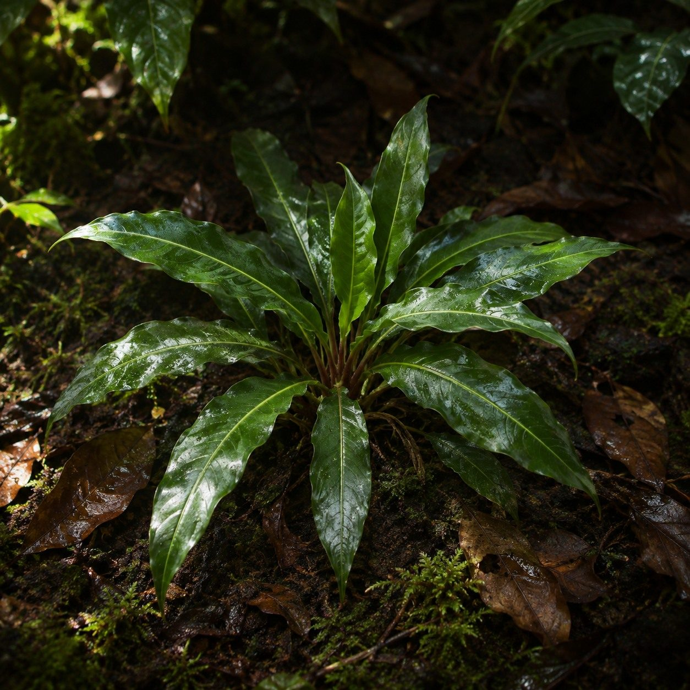
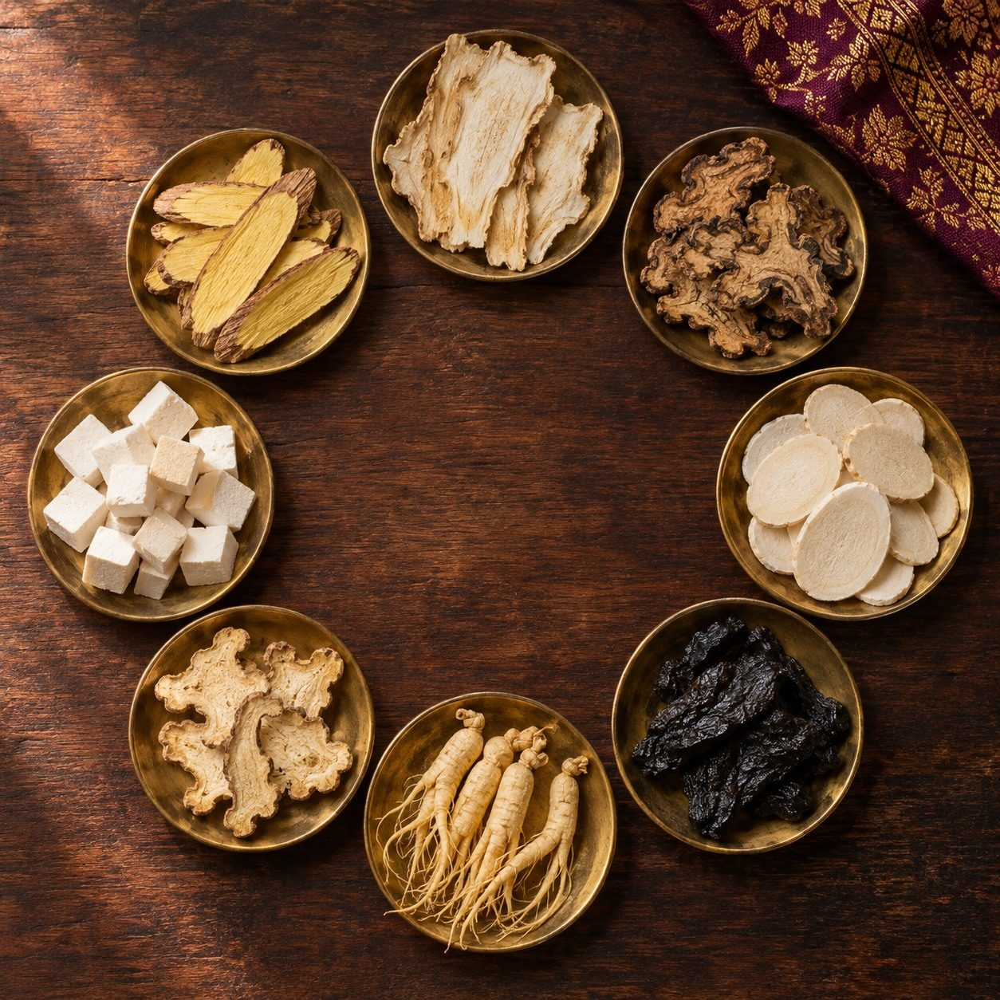

Bahan dalam FEMORA
Dua herba utama dan lapan herba sokongan. Di sini kami terangkan setiap satunya: dari mana asalnya, bagaimana ia digunakan secara tradisi, dan apa yang kajian tahu setakat ini.
Satu formula, sepuluh herba
Kacip Fatimah dan Manjakani ialah teras penjagaan dalaman wanita Melayu, jadi kedua-duanya menjadi bahan utama. Ba Zhen pula ramuan Cina klasik yang tumpuannya pada darah dan tenaga. Ia melengkapkan dua herba utama, bukan menggantikannya.
Malaysia tempat dua tradisi herba ini hidup berjiran. FEMORA menghimpunkannya dalam satu sajian.

Kacip Fatimah
Labisia pumila. Juga dikenali sebagai Selusuh Fatimah.
Kacip Fatimah ialah herba renek yang tumbuh di lantai hutan hujan Malaysia, di tempat yang redup dan lembap. Daunnya hijau gelap dan tumbuh rapat ke tanah.
Dalam amalan tradisi
Bidan kampung merebus daun dan akarnya untuk diminum ibu selepas bersalin. Menurut Jabatan Perhutanan Semenanjung Malaysia, herba ini secara tradisinya digunakan untuk mengekalkan sistem peranakan wanita yang sihat, dan ia antara bahan paling popular dalam jamu berpantang.
Apa kata kajian
Kacip Fatimah antara herba tempatan yang paling banyak dikaji. Penyelidik menemui sebatian fitoestrogen di dalamnya, dan beberapa kajian meneliti kegunaannya untuk wanita menopaus. Kajian klinikal pada manusia masih terhad, sebab itu kami hanya menyatakan kegunaan tradisinya.

Manjakani
Quercus infectoria. Dalam bahasa Inggeris: oak gall.
Manjakani bukan buah sebenar. Ia ketumbuhan bulat dan keras yang terbentuk pada ranting sejenis pokok oak dari Asia Barat. Ia sampai ke Alam Melayu melalui perdagangan rempah, lalu menjadi bahan tetap dalam jamu wanita.
Dalam amalan tradisi
Manjakani ditumbuk halus dan dicampur dalam jamu atau makjun untuk penjagaan dalaman wanita, terutamanya dalam tempoh berpantang. Rasanya sangat kelat.
Apa kata kajian
Rasa kelat itu datang daripada tanin dan asid galik, sebatian yang bersifat astringen. Kajian makmal ada meneliti sifat antioksidan dan antimikrob ekstraknya. Bukti klinikal pada manusia masih sedikit, jadi kami tidak membuat tuntutan melebihi kegunaan tradisinya.

Ba Zhen, lapan herba sokongan
Ba Zhen (八珍) bermaksud “lapan khazanah”. Resipinya berusia ratusan tahun dan menggabungkan dua ramuan asas perubatan tradisional Cina: empat herba untuk darah dan empat herba untuk tenaga, atau qi.
Dalam masyarakat Cina, ia lazim direbus sebagai sup dan diminum wanita selepas haid tamat. Dalam resipi klasik, kesemua lapan bahannya daripada tumbuhan dan kulat, tanpa bahan haiwan.
| Nama herba | Nama biasa | Nama botani | Bahagian |
|---|---|---|---|
| Dang Gui | Akar angelika | Angelica sinensis | Akar |
| Chuan Xiong | Rizom lovage sichuan | Ligusticum chuanxiong | Rizom |
| Bai Shao | Akar peony putih | Paeonia lactiflora | Akar |
| Shu Di Huang | Akar rehmannia | Rehmannia glutinosa | Akar yang dikukus |
| Ren Shen | Ginseng | Panax ginseng | Akar |
| Bai Zhu | Rizom atractylodes | Atractylodes macrocephala | Rizom |
| Fu Ling | Kulat poria | Poria cocos | Kulat |
| Gan Cao | Akar manis | Glycyrrhiza uralensis | Akar |
[isi: sahkan senarai dan nama herba Ba Zhen ikut label produk sebenar]
Keselamatan dahulu
Sebelum mula: jangan ambil jika anda hamil. Jika anda menyusu, merancang untuk hamil, ada penyakit kronik, atau sedang mengambil ubat (contohnya ubat cair darah atau ubat hormon), tanya doktor atau ahli farmasi dahulu.
Senarai penuh soalan tentang cara guna ada di Soalan lazim.